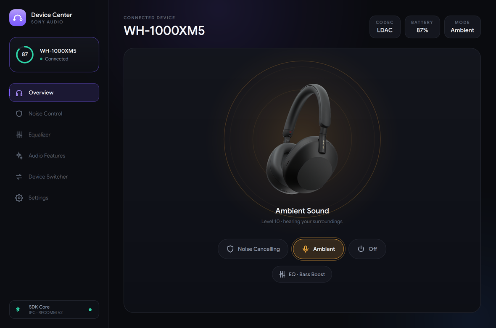
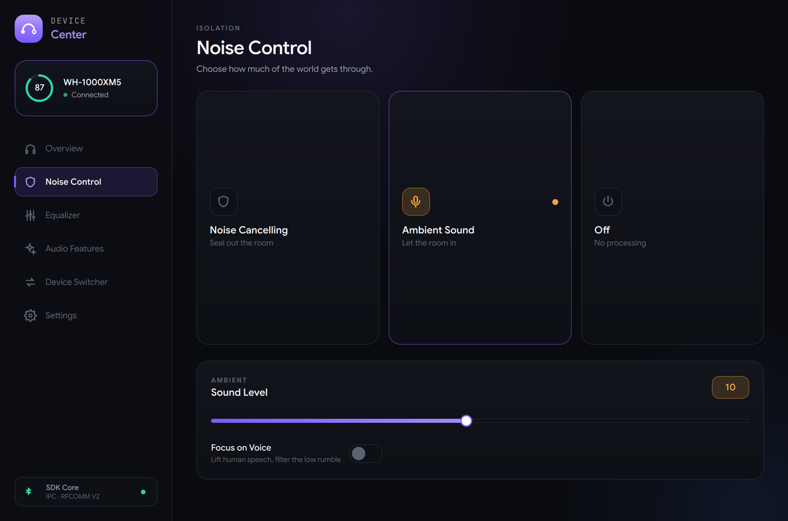
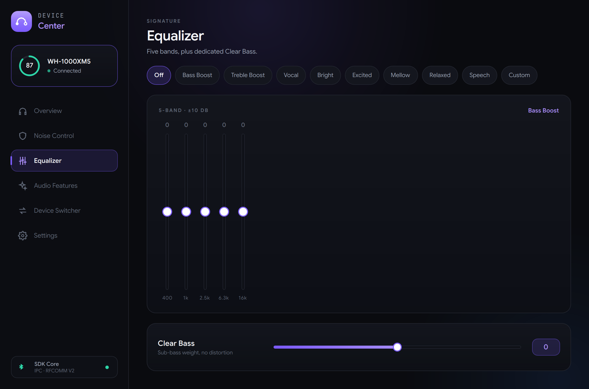
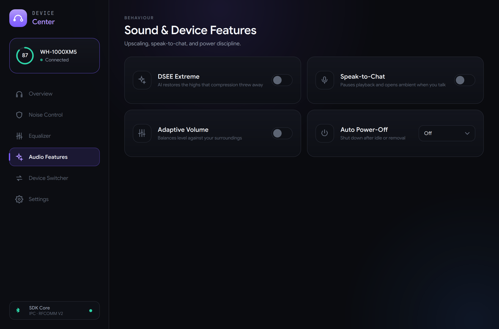
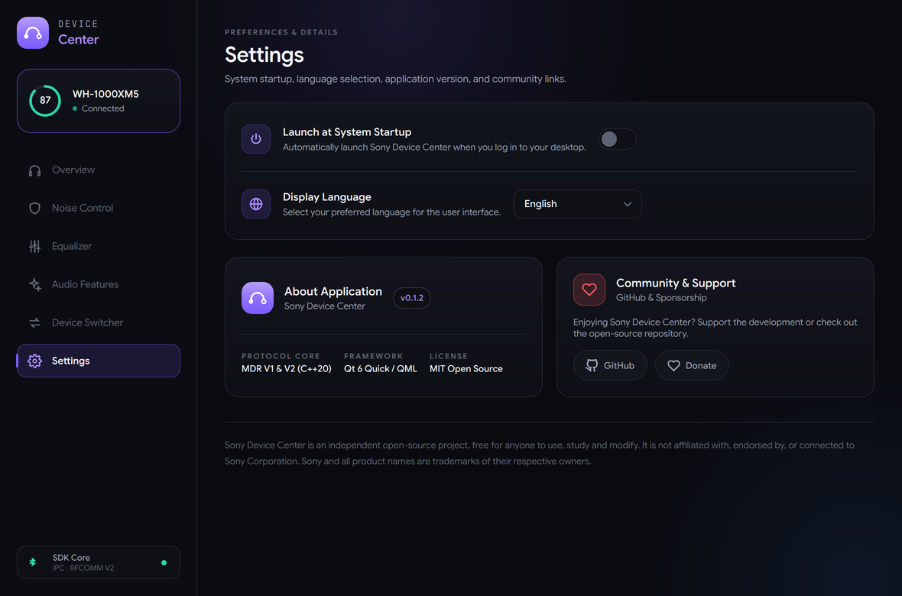

Let in as much of the world as you want.
Switch between active noise cancelling, ambient sound and off. Ambient runs the full 1–20 range Sony's own app exposes, and Focus on Voice lifts speech while the low rumble stays out.
Noise cancelling, ambient sound, a five‑band equalizer, DSEE and battery — all from your desktop. No mobile app, no Sony account.

A native Qt 6 desktop app. It reads capabilities from the device profile, so you only ever see the controls your headphones actually have.




Switch between active noise cancelling, ambient sound and off. Ambient runs the full 1–20 range Sony's own app exposes, and Focus on Voice lifts speech while the low rumble stays out.
Every built-in preset — Bright, Excited, Mellow, Relaxed, Vocal, Bass Boost, Treble Boost, Speech — or dial your own curve across 400 Hz to 16 kHz with a dedicated sub-bass control.
DSEE Extreme upscaling, Speak-to-Chat, Adaptive Volume and Auto Power-Off. Each one is enabled from the device's capability profile, so nothing here pretends to work on hardware that doesn't support it.
Launch at login, six interface languages, and a dark UI that respects your desktop rather than fighting it. No account, no telemetry, nothing phoning home.
Sony headphones expose a vendor RFCOMM service. Device Center frames commands on the wire, handles the alternating-bit ACK the newer models require, and reads state straight back from the headset.
Start and end markers bound every frame; 3C, 3D and 3E inside the body are escaped so they can never be mistaken for a delimiter. Checksums are verified on the way in.
The generations disagree dangerously: opcode 0x22 requests battery on V2 and means power off on V1. They live behind separate implementations, with a regression test proving V1 never emits it.
A single reader thread parses the byte stream into frames, matches responses to requests, ACKs notifications and survives fragmentation, timeouts and mid-frame disconnects.
Devices are only marked verified after real hardware confirms them — never on protocol similarity alone. The full matrix lives in the repository.
The desktop app is one client. Everything underneath is a reusable C++20 library you can build against.
Bind noise cancelling to a keyboard shortcut. Check battery from your status bar. Script anything the app can do.
sonyctl anc onsonyctl eq bass-boostA background daemon that owns the Bluetooth link and serves the app and the CLI over a local socket, so they never fight over the connection.
sony-transport, sony-protocol and sony-core — transport abstraction, framing and device state, with a deterministic fake transport for tests.
Pair your headphones in your system Bluetooth settings first, then open Device Center.
sudo dnf install ./sony-device-center-*-Linux.rpmsudo apt install ./sony-device-center-*-Linux.debRun the MSI, or unpack the ZIP. Qt and the MSVC runtime are bundled — there is nothing else to install.
CMake and a C++20 compiler. Builds the app, the daemon, the CLI and the libraries together.
cmake -B build && cmake --build build